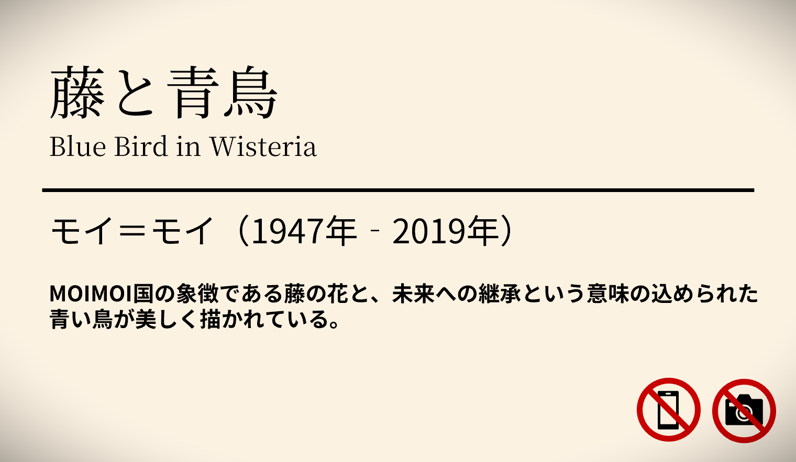

3/13・3/14 MOIMOI国 22周年記念 国宝『藤と青鳥』を中心とする作品が国営博物館で展示！
25XX/12/25 6:01
MOIMOI国は設立22周年を記念して天才芸術家モイ＝モイの生み出した国宝『藤と青鳥』を中心に据えた特別展を、3月13日・14日の2日間、国営博物館で開催する。
作品には国の象徴である藤の花と、未来への継承を意味する青い鳥が美しく描かれており、来場者は芸術と個性の不思議な世界を体験できるようだ。一方でMOIMOI国の過去から、この展示に賛否両論の声が上がっている。
人々がかつて使用できたと言われている特殊能力、いわゆる「個性」をモイ＝モイは持っていた。それは自分の生み出したものに命と個性を吹き込むことができる能力だそうだ。もちろん『藤と青鳥』も例外ではなく、他人の個性を吸い込む能力を持っている。500年前、人々が持つ個性の封印が成功したのは紛れもなくこの作品の副産物であった。
そのため『藤と青鳥』の個性を悪用しようと、この作品を狙う人が後を絶たないと言う。